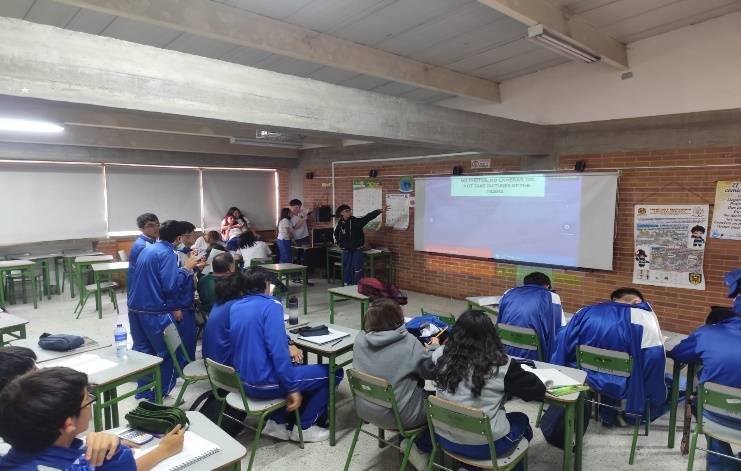
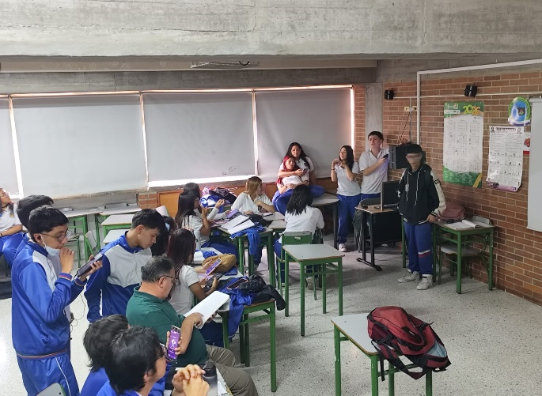
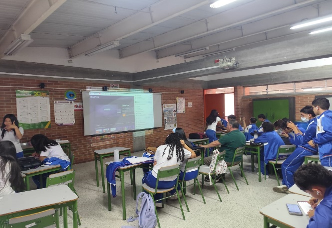
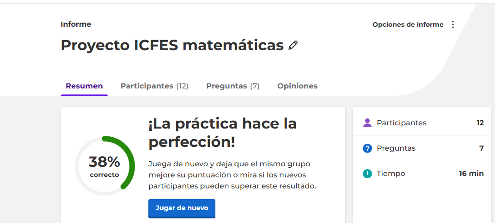
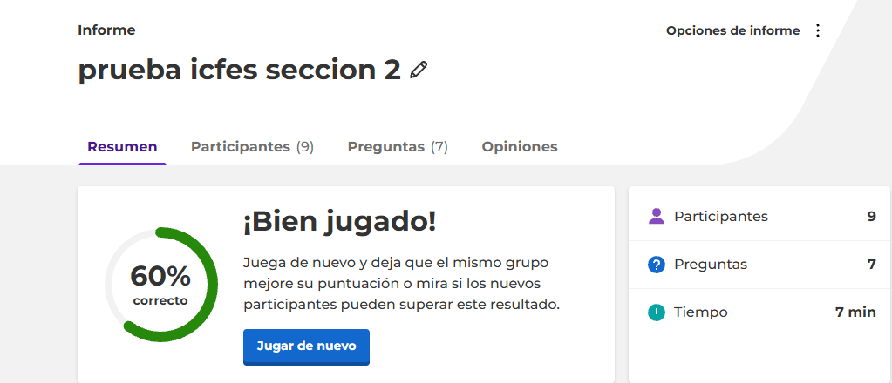

PREPARACION PRUEBA SABER 11 CON ENFASIS EN INGLES Y MATEMATICAS
Kevin Martinez/ Juan Castellón
Curso 1103
Comunicación
COLEGIO VENECIA I. E .D
12 de junio de 2026
TABLA DE CONTENIDOS
INTRODUCCION
PLANTEAMIENTO
OBJETIVOS
ESTADO DEL ARTE
MARCO TEORICO
CONCEPTOS CLAVE
MARCO CONTEXTUAL
DISEÑO METODOLOGICO
EVIDENCIAS
REFERENCIAS
PREPARACION PRUEBA SABER 11 CON ENFASIS EN INGLES Y MATEMATICAS
INTRODUCCIÓN
La educación es un factor fundamental para el desarrollo académico y profesional de los estudiantes. En Colombia, la prueba Saber 11, aplicada por el ICFES, evalúa las competencias adquiridas durante la educación media y constituye un requisito importante para el acceso a la educación superior.
Las áreas de inglés y matemáticas suelen representar desafíos para muchos estudiantes del colegio VENECIA I.E D debido a las habilidades de comprensión, análisis y razonamiento que exigen. Por esta razón, surge la necesidad de implementar estrategias que permitan fortalecer dichas competencias mediante actividades, simulacros y metodologías inspiradas en experiencias educativas internacionales.
Este proyecto busca identificar las principales dificultades de los estudiantes y proponer acciones que contribuyan a mejorar su desempeño en las pruebas Saber 11, especialmente en las áreas de inglés y matemáticas.
PLANTEAMIENTO DEL PROBLEMA
Los resultados de las pruebas Saber 11 muestran que muchos estudiantes presentan dificultades en las áreas de inglés y matemáticas. Estas dificultades afectan su desempeño académico y limitan sus oportunidades de acceso a la educación superior. Por ello, es necesario implementar estrategias que permitan fortalecer dichas competencias y mejorar los resultados obtenidos en las evaluaciones estandarizadas.
Pregunta de investigación
¿Cómo puede una estrategia de fortalecimiento en inglés y matemáticas contribuir al mejoramiento del desempeño de los estudiantes del colegio VENECIA I. E.D en la prueba Saber 11?
JUSTIFICACIÓN
Este proyecto es importante porque busca fortalecer las competencias en inglés y matemáticas, áreas fundamentales para el desempeño académico de los estudiantes. Además, pretende contribuir al mejoramiento de los resultados en la prueba Saber 11 mediante la implementación de actividades y simulacros que favorezcan el aprendizaje y el desarrollo de habilidades de razonamiento y comprensión.
OBJETIVOS
Objetivo General
Fortalecer las competencias de inglés y matemáticas de los estudiantes mediante la aplicación de estrategias pedagógicas, talleres y simulacros tipo Saber 11, con el fin de mejorar su desempeño en la prueba del ICFES y desarrollar habilidades de comprensión, análisis y resolución de problemas.
Objetivos Específicos
Identificar las principales dificultades que presentan los estudiantes en las áreas de inglés y matemáticas mediante la aplicación de encuestas y actividades diagnósticas.
Analizar los resultados obtenidos para determinar las competencias que requieren mayor fortalecimiento.
Diseñar e implementar talleres y actividades basados en preguntas tipo Saber 11 que contribuyan al mejoramiento de las habilidades evaluadas en inglés y matemáticas.
ESTADO DEL ARTE.
Investigaciones relacionadas
En Colombia se han desarrollado diferentes investigaciones universitarias orientadas al fortalecimiento de las competencias evaluadas en la prueba Saber 11, especialmente en las áreas de inglés y matemáticas.
En el área de inglés, Plazas Irreño (2019), en la Universidad Distrital Francisco José de Caldas, desarrolló una propuesta para preparar estudiantes de grado 11 para la prueba Saber 11 mediante el uso de la plataforma Moodle. La investigación implementó talleres, cuestionarios, foros y videos como herramientas de apoyo al proceso de aprendizaje y retroalimentación.
De manera similar, Soriano Cárdenas y Moreno Lizcano (2019) desarrollaron una propuesta de preparación para la prueba Saber 11 en el área de inglés mediante actividades educativas implementadas a través de Moodle. Estos estudios demuestran la importancia de utilizar herramientas tecnológicas y actividades prácticas para fortalecer las competencias de los estudiantes.
En el área de matemáticas, Estrada Paz y Guerrero Alvarado (2022) diseñaron e implementaron un ambiente virtual de aprendizaje orientado al entrenamiento de estudiantes para las pruebas ICFES Saber 11. La propuesta incluyó contenidos, ejercicios y simulacros con retroalimentación automática para fortalecer las habilidades matemáticas de estudiantes de educación media.
Por otra parte, Sánchez y Sánchez (2021) desarrollaron una intervención basada en el Aprendizaje Basado en Problemas para mejorar el desempeño de estudiantes de grado 11 en matemáticas. Su propuesta se centró en competencias como la interpretación de gráficas, tablas, textos y la resolución de problemas contextualizados.
Estas investigaciones son relevantes para el presente proyecto, ya que demuestran que la implementación de talleres, simulacros, estrategias pedagógicas, herramientas tecnológicas y metodologías activas puede contribuir al fortalecimiento de las competencias evaluadas en la prueba Saber 11. Sin embargo, el presente proyecto busca integrar de manera conjunta las áreas de inglés y matemáticas, identificando inicialmente las dificultades de los estudiantes mediante una encuesta y posteriormente desarrollando estrategias de fortalecimiento adaptadas a sus necesidades.
Proyectos internacionales
Además de estas tesis universitarias a nivel nacional, también existen proyectos similares asociadas a el fortalecimiento de las áreas de matemáticas e inglés con un enfoque internacional entre ellos están:
PISA
Es una evaluación internacional coordinada por la OCDE que mide las competencias de estudiantes de 15 años en lectura, matemáticas y ciencias.
Aportes al proyecto
Evaluación basada en situaciones de la vida real
.Desarrollo del pensamiento crítico.
Interpretación de gráficos, tablas y textos
CAMBRIDGE ASSESSMENT ENGLISH
Programa internacional especializado en la evaluación del dominio del idioma inglés.
Aportes al proyecto
Fortalecimiento de la comprensión lectora.
Desarrollo de vocabulario académico.
Interpretación de información escrita en contextos reales.
COMMON CORE STATE STANDARDS
Conjunto de estándares educativos implementados en Estados Unidos para desarrollar competencias matemáticas y comunicativas
Aportes al proyecto
Resolución de problemas contextualizados
.Integración entre lectura y razonamiento matemático
Justificación de respuestas mediante argumentos lógicos.
MARCO TEORICO
Debido a que el proyecto tiene un enfoque hacia la preparación en las áreas de matemáticas e ingles que realiza el ICFES como examen de estado, es necesario mencionar algunos aspectos q son importantes
Según el ICFES la prueba de matematicas evalúa las competencias que requieran el uso de herramientas matemáticas de tres principales categorías: Algebra y calculo, Geometría y Estadística. El contenido de la prueba cuenta con 49 preguntas de opción múltiple con una única respuesta de las cuales están orientadas a evaluar tres competencias las cuales son: “Argumentación” la cual evalúa la capacidad para validar o refutar conclusiones, estrategias, soluciones, interpretaciones y representaciones en diversas situaciones, “Formación y Ejecución” que evalúa la capacidad para validar o refutar conclusiones, estrategias, soluciones, interpretaciones y representaciones en diversas situaciones, “interpretación y representación” evalúa la capacidad para plantear y ejecutar estrategias, y solucionar problemas en diversos contextos.
Por otro lado, la prueba de ingles evalua la competencia comunicativa del estudiante con el objetivo de dar cuenta de lo que es capaz de hacer, segun lo expresado en el Marco Comun Europeo. Su contenido en la prueba cuenta con 55 preguntas de opción multiple con una única respuesta encontrándose repartidas en 6 partes las cuales califican a través de tareas de lectura literal e inferencial, gramática y lexico
Tambien en importante decir que tanto la prueba de matemáticas y ingles que aplica el ICFES califica el nivel de desempeño agrupándose en 4 niveles (1, 2 ,3,4) para matematicas y (preA1, A1,A2,B1) para ingles, estos niveles de desempeño se establecen de acuerdo a el pocentaje obtenido por el estudiante donde en la prueba de matemáticas el nivel 1:
(porcentaje obtenido 0-35) “Lee información puntual (un dato, por ejemplo) relacionada con situaciones cotidianas y presentada en tablas o gráficas con escala explícita, cuadrícula o, por lo menos, líneas horizontales”. Nivel 2: (porcentaje obtenido 36-50) “Compara la probabilidad de eventos simples (casos favorables/ casos posibles) cuando los casos posibles son los mismos en ambos eventos y en contextos similares a los presentados en el aula. » Toma decisiones sobre la veracidad o falsedad de una afirmación cuando esta se puede explicar verbalizando la lectura directa que se hace de la información. Nivel 3: (porcentaje obtenido 51-70) “Selecciona la gráfica (que puede ser de doble entrada correspondiente a la información de una tabla, o a partir de verbalizaciones (características de crecimiento o decrecimiento deseadas), teniendo en cuenta para la selección la escala, el tipo de variable y el tipo de gráfica. » Compara información gráfica que requiere algunas manipulaciones aritméticas. » Señala información representada en formatos no convencionales” y Nivel 4 : (porcentaje obtenido 71-100) “ Resuelve problemas que requieren construir una representación auxiliar (gráficas y fórmulas) como paso intermedio para su solución. » Modela usando lenguaje algebraico información dada en lenguaje natural, tablas o representaciones geométricas. Manipula expresiones algebraicas o aritméticas haciendo uso de las propiedades de las operaciones.”
DISEÑO METODOLOGICO
Desde el enfoque aplicado
El proyecto se encuentra en un proceso de desarrollo de la cual su base se centra en fases que contienen un conjunto de actividades específicas, se espera finalizar el proyecto dentro de un plazo de 2 meses
Fases del proyecto
Las fases del proyecto consisten en momentos en los cuales se permitieron realizar actividades especificas con fin de llegar a el objetivo, estas fases consisten en:
Primera fase: preparación y observación: 1) inmersión en cursos de decimo para su observación y caracterización. 2) preparación de una página web con objetivo de complementar ayuda a los estudiantes
Segunda fase: diseño técnico y pedagógico: 1) desarrollo de la página web. 2) diseño de 6 simulacros en la página Kahoot! los cuales representarían los tres momentos importantes (antes, durante, después) del proyecto. 3) diseño de una app (solución tecnológica) la cual permitirá a los estudiantes resolver problemas tipo ICFES de manera rápida y portátil 4) diseño de entrevistas hacia profesores con fin de que expliquen con sus propias palabras la manera de como actuar en las pruebas ICFES
Tercera fase: implementación y retroalimentación: 1) los estudiantes presentaron una preprueba que consto con 14 preguntas de ingles y de matematicas por la aplicación kahoot! . 2) pre análisis de los resultados con el fin de identificar cuales son las debilidades de los estudiantes 3) desarrollo de la solución tecnológica 4) presentación de prueba durante el proyecto y entrega de folleto el cual incluye tips y consejos sobre el ICFES
Cuarta fase: análisis de resultados y presentación de proyecto: 1) construcción del informe. 2) análisis total de resultados 3) presentacion de las conclusiones. 4) presentación solución tecnológica y pagina web frente a la comunidad educativa
Poblacion
La población esta constituida por estudiantes de grado decimo de la institución educativa Venecia I.E.D ubicada en el sur de Bogota D.C
MARCO CONCEPTUAL
La prueba Saber 11 es una evaluación estandarizada aplicada en Colombia por el ICFES para medir el desarrollo de competencias en diferentes áreas del conocimiento. Entre 2profesional.
Competencias Matemáticas
Las competencias matemáticas incluyen la capacidad de resolver problemas, interpretar
información cuantitativa, analizar gráficos y tablas, aplicar conceptos matemáticos en situaciones cotidianas. El aprendizaje de las matemáticas favorece el desarrollo del razonamiento lógico y la toma de decisiones basadas en evidencia.
Competencias en Inglés
El inglés es considerado una lengua de comunicación internacional. Las competencias evaluadas incluyen comprensión de lectura, identificación de información explícita e implícita ,uso de vocabulario, Interpretación de contextos comunicativos. El fortalecimiento de estas habilidades permite a los estudiantes acceder a mayores oportunidades académicas y laborales
Aprendizaje Basado en Competencias
El aprendizaje basado en competencias busca que los estudiantes apliquen sus conocimientos en contextos reales, desarrollando habilidades de análisis, interpretación y solución de problemas, enfoque utilizado tanto por el ICFES como por programas internacionales como PISA.
EVIDENCIAS
EVIDENCIA FOTOGRAFICA IMPLEMENTACION PREPRUEBA GRADO 1004 JM



RESULTADO KAHOOTS INGLES Y MATEMATICAS

